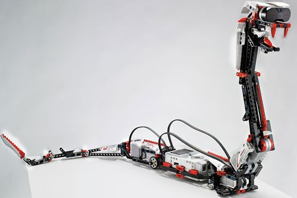
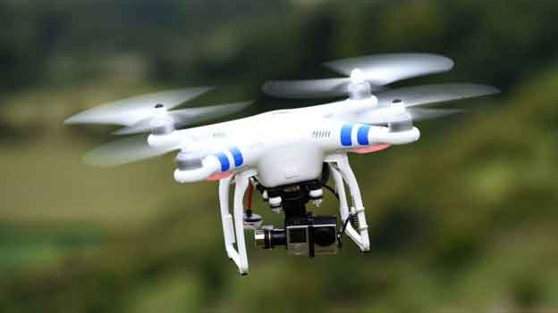
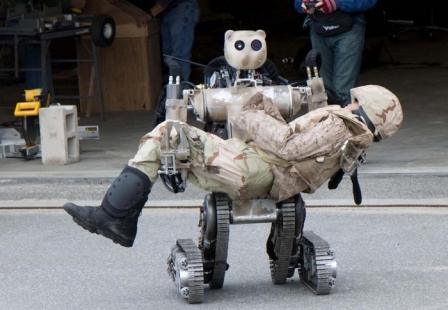
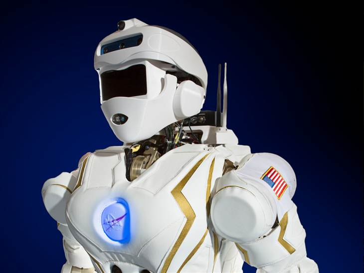

Приклади

Робот-змія
Тепер вчені намагаються відтворити все це у металі.Вже кілька років тому були створені «роботи-змії», які є яскравими представниками біонічного підходу до робототехніки.у воєнний час розфарбовування буде відповідне Ці роботи у процесі переміщення дивовижно точно копіюють хвилеподібні рухи реальних плазунів.Щоправда, такі машини поки програють справжнім зміям в швидкості і можливості перебиратися через різні перешкоди: водні простори, і вертикальні поверхні.Але, якщо цього вдасться досягти, то такий робот стане справді незамінним розвідником, всюдисущим і непомітним для супротивника.

Роботи-безпілотники
За сучасним визначенням, «безпілотником» є тільки той апарат, який знаходиться під постійним дистанційним контролем пілота або пілотів і призначений для повернення на аеродром і для подальшого повторного використання. Тобто крилата ракета до категорії «безпілотників» не належить .Раніше радіокеровані та повністю автоматизовані апарати об'єднували поняттям безпіло́тна авіа́ція — літаки, керування (пілотування) якими здійснюється без пілота, за допомогою приладів різних систем, що засобами радіо (радіолокації, телебачення) подають команди на автопілот. Елементи системи керування містяться поза літаком і можуть бути на землі, на воді і в повітрі, на місці старту, на маршруті польоту і в районі цілі. Для передачі на пункт управління даних, отриманих з бортових сенсорів, у складі БПЛА є радіопередавач, що забезпечує зв'язок з наземним обладнанням. В залежності від формату зображень та їхнього стисткання швидкість передачі цифрових радіканалів зв'язку з БПЛА може становити одиниці-сотні Мбіт/с.БПЛА масово застосовуються у військовій справі, в першу чергу для ведення повітряної розвідки — як тактичної, так і стратегічної. Безпілотники під-класів «міні-» та «мікро-» все ширше застосовуються під час бойових дій на рівні взводу та відділення для термінового отримання інформації типу «що за тим пагорбом», тобто для вирішення задач військової розвідки. Перспективним напрямом їх застосування є вирішення завдань у складі рою. Також використовуються БПЛА для коригування вогневих ударів по наземних цілях та як ударні.

Робот-санітар
Одним з напрямків військового застосування робототехніки, є евакуація поранених з поля бою. Якби вдалося створити подібного робота, то вдалося б зберегти життя багатьом солдатам, не піддаючи ризику медперсонал. Американська фірма Vecna Technologies, добре зарекомендувала себе в області медичних комп'ютерних технологій, взялася за вирішення такого складного завдання, як створення пошуково-рятувального робота. Незважаючи на складність поставленого завдання, компанія вже в 2006 році реалізувала прототип, званий ними рятувальний робот BEAR.

Валькірія
«Валькірія», також «Валькірія-1» (англ. Valkyrie) — прототип бойового людиноподібного робота, створеного NASA для потреб армії і космічних програм.Космічний центр імені Ліндона Джонсона NASA представив прототип антропоморфного військового робота, розробка якого ведеться в інтересах американських військових у рамках проекту DARPA Robotics Challenge (DRC).Робот отримав неофіційну назву «Валькірія-1» (Valkyrie), а офіційно позначається як R5. Розробка робота ведеться спільно з Техаським університетом в Остіні і Техаським університетом A&M.Валькірія ґрунтується на прототипі «Робонавт» (Robonaut), попередній розробці людиноподібного робота цього космічного агентства. Станом на грудень 2013 року «Робонавт» перебуває на навколоземній орбіті, на Міжнародній космічній станції. «Робонавт», побудований для роботи в середовищі невагомості, мав розмір і форму громіздкого людиноподібного тулуба. Потужні ноги Валькірії і легший корпус уможливили пристосувати його для роботи на Землі. Модульна конструкція робота означає, що на верхніх кінцівках робота можливо монтувати різні агрегати (зокрема, модуль зброї); і що руки робота можуть бути оснащені маніпуляторами типу «людські руки» за лічені хвилини.«Ми хочемо полетіти до Марса», — каже Ніколас Редфорд, керівник групи, що працювала над проектом «Валькірія-1» у відео про робота. — «Швидше за все, НАСА відправить роботів попереду астронавтів на планеті. Ці роботи розпочнуть підготовку для прибуття людей-дослідників. А коли науковці прибудуть на планету, роботи і люди будуть працювати разом у спеціальних помешканнях, закладаючи фундамент для співпраці людини і робота в жорстких природних умовах. Такі технології, як Валькірія, закладають основу для створення нових автоматизованих систем, які готуватимуть умови на інших планетах для прибуття астронавтів, чим суттєво полегшать проблему освоєння планет людством».